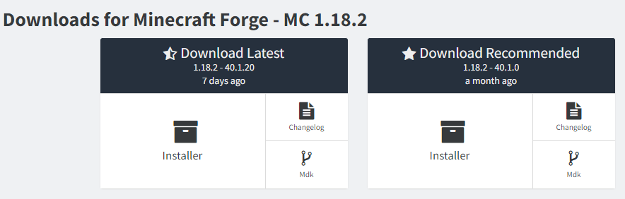
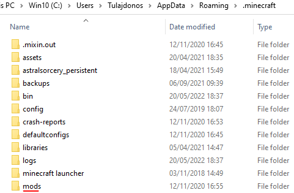

A játék modolása (Tutorial)
1. A legfontosabb, hogy legyen egy biztonsági másolat a világainkról, és a minecraft fájlairól.
2. Legyen letöltve a Minecraft Forge
3. Keressük meg és töltsük le a kompatibilis és biztonságos modot, amit beraknánk. (a Mojang és most már Microsoft
utasítása szerint "on your own risk" tehát gyakorlatilag saját felelősségre modoljunk.)
4. Helyezzük be a /mods/ mappába a letöltött fájlokat.
5. Ha elindítottuk a játékot válasszuk ki a játszani szánt modot, és indítsuk a játékot.